## read in and clean datalibrary(tidyverse) # for cleaning and viewing datalibrary(here) # for importing datalibrary(ggpubr)library(rstatix)library(ggplot2)library(car)library(multcomp)library(nlme)library(emmeans)fig_2b_raw <-read.csv(here("data", "final_NCOS_2024_reformatted_for_R.xlsx - Fig2B.csv"))fig_3b_raw <-read.csv(here("data", "final_NCOS_2024_reformatted_for_R.xlsx - Fig3B.csv"))fig_4b_raw <-read.csv(here("data", "final_NCOS_2024_reformatted_for_R.xlsx - Fig4B.csv"))# set up custom thememyCustomTheme <-function() {theme_minimal() +theme(axis.text =element_text(size =12, family ="Times", color ="black"),axis.title =element_text(size =14, face ="bold", family ="Times", color ="black"),axis.title.y =element_text(margin =margin(r =15), size =14, face ="bold", family ="Times", color ="black"), # Add space between y-axis label and axistitle =element_text(size =12, face ="bold", family ="Times"),plot.caption =element_text(size =10, face ="italic", family ="Times"),legend.text =element_text(size =10, family ="Times"), # Increase legend text sizepanel.grid.major.x =element_blank(), # Remove major vertical grid linespanel.grid.minor.x =element_blank()) # Set axes ticks color to black}
Data reformatting and cleaning
Code
## 2Bpw <- fig_2b_raw %>%# add column for microbes or nomutate(microbes =case_when(str_detect(sample_ID, "\\+microorganism") ~"y",TRUE~"n" )) %>%# # add column for water_treatmentmutate(water_treatment =case_when( sample_ID %in%c("1%TB", "MQ", "Added Bd") ~"sterile-water", sample_ID %in%c("1%TB+PW+microorganism", "PW+microorganism") ~"PW+MO", sample_ID %in%c("1%TB+PW-microorganism", "PW-microorganism") ~"PW-MO" )) %>%# add column for TB or nomutate(TB =case_when(str_detect(sample_ID, "TB") ~"y",TRUE~"n" ))pw_summary <- pw %>%group_by(day, sample_ID) %>%reframe(mean =mean(adh_plus_sup), # calculate the meann =length(adh_plus_sup), # count the number of observationsdf = n -1, # calculate the degrees of freedomsd =sd(adh_plus_sup), # calculate the standard deviationse = sd/sqrt(n), # calculate the standard error ) %>%mutate(microbes =case_when(str_detect(sample_ID, "\\+microorganism") ~"y",TRUE~"n")) %>%# add column for TB or nomutate(TB =case_when(str_detect(sample_ID, "TB") ~"y", TRUE~"n")) %>%# add column for PW or nomutate(water_treatment =case_when( sample_ID %in%c("1%TB", "MQ", "Added Bd") ~"sterile-water", sample_ID %in%c("1%TB+PW+microorganism", "PW+microorganism") ~"PW+MO", sample_ID %in%c("1%TB+PW-microorganism", "PW-microorganism") ~"PW-MO" ))## aquatic environmental biofilm (4b but I think its supposed to be 3b)# add column for microbes or noae <- fig_3b_raw %>%rename(sample_ID = Adherent.sample.ID) %>%# add columns for components y/n# add column for TB or nomutate(TB =case_when(str_detect(sample_ID, "TB") ~"y",TRUE~"n" )) %>%# add column for PW or nomutate(PW =case_when(str_detect(sample_ID, "PW") ~"y",TRUE~"n" ))## Monolayer (3b but I think its supposed tobe 4b)# add column for microbes or nomonolayer <- fig_4b_raw %>%rename(sample_ID = sample.ID) %>%rename(adh_plus_sup = ahd_plus_sup) %>%# rename sample_id to only include treatment, not daymutate(sample_ID =str_replace(sample_ID, "-D[0-9]+$", "")) %>%# add columns for components y/nmutate(microbes =case_when(str_detect(sample_ID, "\\+microbes") ~"y",TRUE~"n" )) %>%# add column for TB or nomutate(TB =case_when(str_detect(sample_ID, "TB") ~"y",TRUE~"n" )) %>%# add column for PW or nomutate(PW =case_when(str_detect(sample_ID, "PW") ~"y",TRUE~"n" ))
For stats: no “day 0” and relevel factors
Code
##### 2b #####pw_noday0 <- pw %>%filter(day !=0) %>%mutate(log_adh_plus_sup =log(adh_plus_sup)) # note: no zeroes so not log + 1# quick check: we want day as a FACTORpw_noday0 <- pw_noday0 %>%mutate(day =as.factor(day))str(pw_noday0$day)
# set MQ as referencepw_noday0$sample_ID <-factor(pw_noday0$sample_ID)pw_noday0$sample_ID <-relevel(pw_noday0$sample_ID, ref ="MQ")# set sterile water as referencepw_noday0$water_treatment <-factor(pw_noday0$water_treatment)pw_noday0$water_treatment <-relevel(pw_noday0$water_treatment, ref ="sterile-water")# set no TB as referencepw_noday0$TB <-factor(pw_noday0$TB)pw_noday0$TB <-relevel(pw_noday0$TB, ref ="n")# set no microbes as referencepw_noday0$microbes <-factor(pw_noday0$microbes)pw_noday0$microbes <-relevel(pw_noday0$microbes, ref ="n")
2b: Pond water
Renwei’s figure
Caitlin’s version
Code
fig_2b <- pw_summary %>%# reorder to match Renwei's plotmutate(sample_ID =factor(sample_ID, levels =c("1%TB", "MQ", "1%TB+PW+microorganism", "PW+microorganism", "1%TB+PW-microorganism", "PW-microorganism", "Added Bd"))) %>%ggplot(aes(x = day, y = mean, color = sample_ID)) +geom_point(size =2) +geom_errorbar(aes(ymin = mean - se, # plot the standard errorymax = mean + se),width =0.1) +scale_y_log10(limits =c(1e3, 1e8), breaks =c(1e3, 1e4, 1e5, 1e6, 1e7, 1e8)) +# vibes# vibeslabs(x ="Day",y ="Bd Quantity per sample (ZE/well)",color ="Medium", # Title for color legendlinetype ="Microbes Present"# Title for linetype legend ) +scale_color_manual(values =c("1%TB"="#CCBB44", "MQ"="#228833", "1%TB+PW+microorganism"="#4477AA", "PW+microorganism"="#EE6677", "1%TB+PW-microorganism"="#66CCEE",#"Added Bd" = "#BBBBBB" # removed bc not really a medium"PW-microorganism"="#AA3377"), # Assign specific colors to match RC's plotlabels =c("1%TB"="TB","MQ"="MQ","1%TB+PW+microorganism"="TB + PW + MO","PW+microorganism"="PW + MO","1%TB+PW-microorganism"="TB + PW - MO","PW-microorganism"="PW - MO","Added Bd"="Initial Bd")) +# Custom labels for the color legendgeom_line(aes(linetype = microbes)) +scale_linetype_manual(values =c("n"="dashed", "y"="solid"),labels =c("n"="N", "y"="Y")) +# Change labels to uppercase N and YmyCustomTheme()+scale_x_continuous(breaks =c(0, 1, 3, 5, 7),labels =c("Initial\nBd", "1", "3", "5", "7"))theme(legend.position ="right") # Adjust the legend position to overlap with the plot
Code
fig_2b
Questions for group:
2b EDA
visualize y var: bd load
log transformed will get me closer to normal, note we only need to worry about the residuals normality though, so commented out the transformation of the data for space
Code
# untransformedggqqplot(pw_noday0, "adh_plus_sup", title ="untransformed")
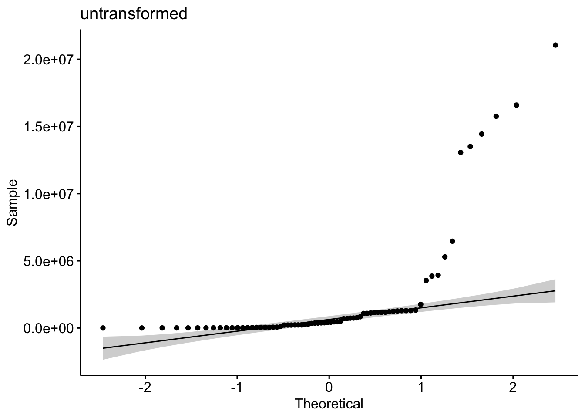
Code
shapiro.test(pw_noday0$adh_plus_sup) # nope
Shapiro-Wilk normality test
data: pw_noday0$adh_plus_sup
W = 0.49498, p-value = 2.434e-14
Code
hist(pw_noday0$adh_plus_sup) # note
Code
hist(sqrt(pw_noday0$adh_plus_sup)) # nope
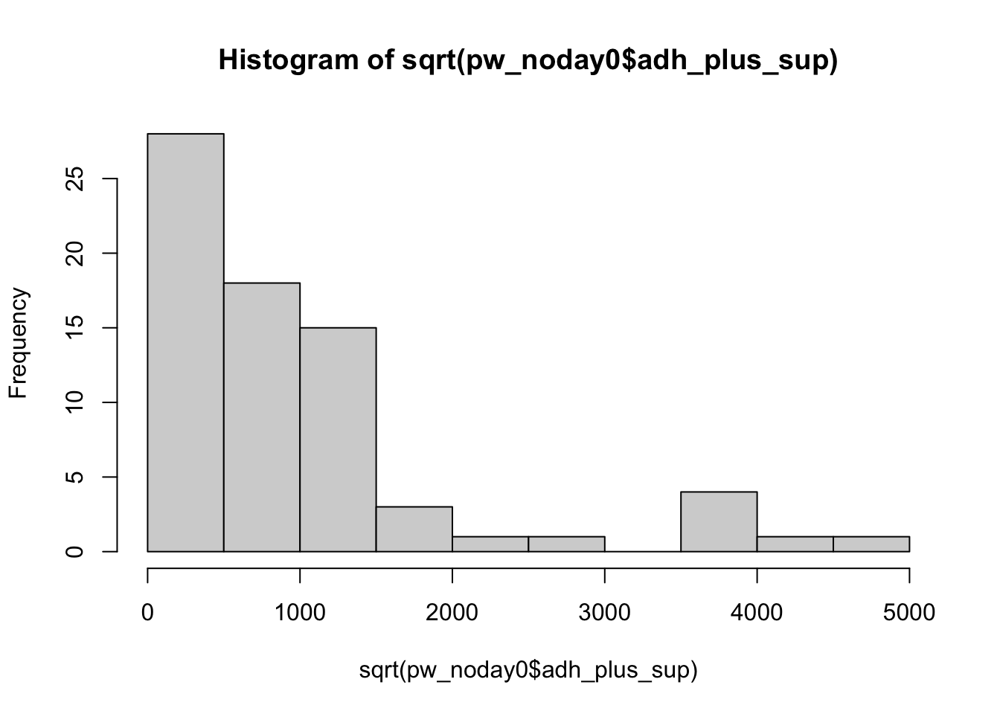
Code
hist(log10(pw_noday0$adh_plus_sup)) # much better...?
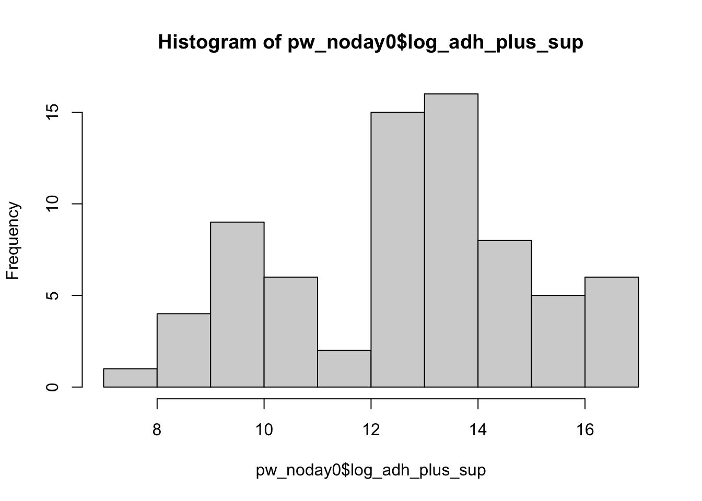
Code
shapiro.test(log10(pw_noday0$adh_plus_sup)) # not quite
Shapiro-Wilk normality test
data: log10(pw_noday0$adh_plus_sup)
W = 0.95623, p-value = 0.01361
Code
# transformedggqqplot(pw_noday0, "log_adh_plus_sup", title ="log transformed") # gorgeous
Code
hist(pw_noday0$log_adh_plus_sup) # better
Code
shapiro.test(pw_noday0$log_adh_plus_sup) # p-value = 0.01361, does not pass shapiro, but this has an n of 72 which is more than the recommended <50 samples
Shapiro-Wilk normality test
data: pw_noday0$log_adh_plus_sup
W = 0.95623, p-value = 0.01361
Code
# visualize comparisons# TB y or npw_noday0 %>%ggplot(aes(x = TB, y = log_adh_plus_sup)) +geom_boxplot()
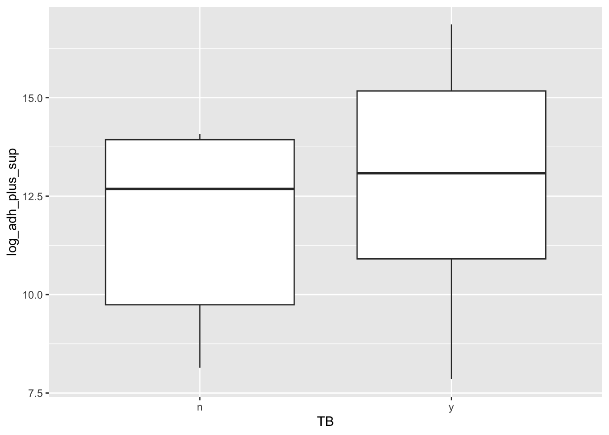
Code
# water_treatpw_noday0 %>%ggplot(aes(x = water_treatment, y = log_adh_plus_sup)) +geom_boxplot()
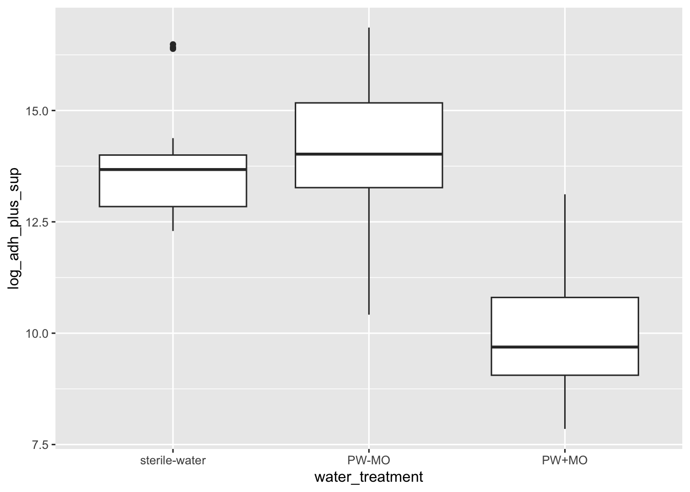
Code
# daypw_noday0 %>%ggplot(aes(x = day, y = log_adh_plus_sup)) +geom_boxplot()
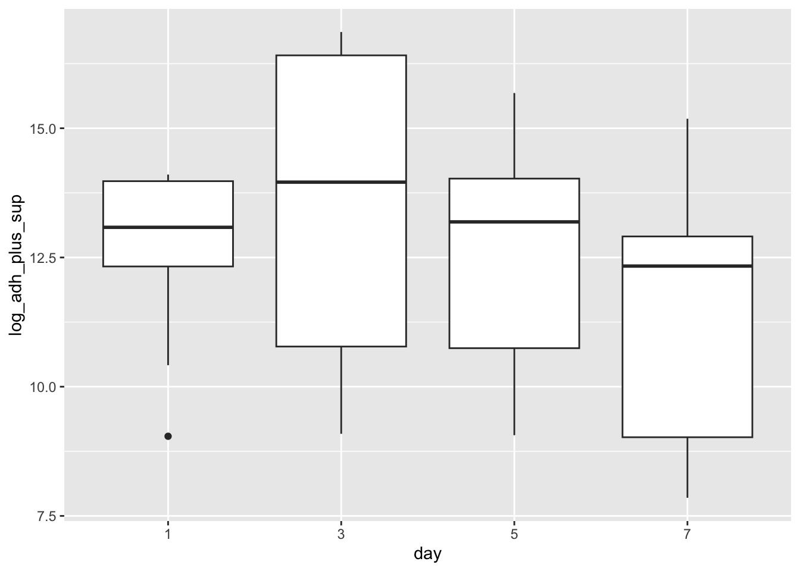
2b Stats
Most appropriate comaprison for study design: daymicrobeswater_treatment
y variable: amount of Bd
x vars: day, TB y/n, water_treatment (pw with microbes, pw without, sterile water)
Question: Does the amount of Bd in the sample differ across the treatments of presence of water type (pw with microbes, pw without, sterile water), TB, and day?
Model: Linear model
Note: anovas, lm’s and glm’s are all linear models!
Try ANOVA with interactions: Bd ~ day*TB*water_treatment
important: does not pass anova assumption that resids are normally distributed
I tried different transformations with no luck either :(
Note: Kruskall wallace isn’t the best move here because I want interactions, if I cut the interactions, a normal anova works, so no need for a KW
Code
# build model# all interactionsmod3 <-aov(log_adh_plus_sup ~ day*TB*water_treatment,data = pw_noday0)# diagnostic plotpar(mfrow =c(2,2))plot(mod3) # NOT normal...
Code
# #look at results# summary(mod3)# anova(mod3)# AIC(mod3) # 127.7922# STOP: not normally distributed resids so can't interpret# TukeyHSD(mod3)# # ## # # comparisons# em <- emmeans(mod3, ~ day * TB * water_treatment)# # Perform the Tukey test for pairwise comparisons# tukey_results <- contrast(em, method = "tukey")# # View the results# summary(tukey_results)# # # day:TB# pairwise_day_TB <- emmeans(mod3, pairwise ~ TB | day, adjust = "tukey")# pairwise_day_TB# plot(pairwise_day_TB)# # # day:water_treatment# pairwise_water_treatment_day <- emmeans(mod3, pairwise ~ water_treatment | day, adjust = "tukey")# pairwise_water_treatment_day# plot(pairwise_water_treatment_day)
Stop! Do not use these following trends, I am interpreting an anova that did not pass assumptions, use the GLM interpretations, but I am interpreting so see if there are any differences (there are not)
Day: same trend as glm (day 3 > 1 = 5 > 7)
TB: same trend as glm (with TB = more Bd)
water_treat: same trend as glm (MQ = pw no microbes > pw with microbes)
day:TB: same trend as glm (after day 1, the presence of TB gives more Bd)
water_treat:day: same trend as glm (across all days, the water treatment trend holds that presence of MO will have lower Bd than without. However, there are nuances between the sterile water and the filtered pond water)
GLM Bd ~ day*TB*water_treatment
Normal distribution GLM
Note this statistical setup is similar to above anova, we are comparing the same things, but the glm uses a different method to look at these differences, and I found the glm has a much better normality of residuals than the “lm” function did.
Results
Day : Day 3 > Day 1 = Day 5 > Day 7
Why would Day 3 be highest? Looks like the treatments without microbes are leading this trend, which show stark increases on day 3
TB: With TB = more Bd than no TB (p <.0001)
Water treatment: any treatment with MO has lower Bd, sterile water and microbe free pond water are the same (p = 0.0629), pond water with microorganisms has less Bd than sterile water (p < 0.001), and pond water with MO has less Bd than pond water without (p < 0.001)
Interactions are all significant, except TB:water_treatment. I recommend putting these in a table, rather than listing them here, but 5 & 6 summarize them
Day and presence of TB: After day 1, there was less Bd in treatments without TB, but on day 1, there was no difference
Day and water treatment: across all days, the water treatment trend holds that presence of MO will have lower Bd than without. However, there are nuances between the sterile water and the filtered pond water.
on days 5&7 sterile water had more Bd than pond water without microbes, but on day 1, sterile water had more Bd than pond water with no microbes, but on day 3, there was no difference.
Code
# normal distribution, should be relatively the same as the anovamod3_glm <-glm(log_adh_plus_sup ~ day * TB * water_treatment,data = pw_noday0,family =gaussian(link ="identity"))par(mfrow =c(2,2))plot(mod3_glm) # better...!
# source for use of anova function on a glm: https://dshizuka.github.io/RCourse/05.1.Stats_LinearModels.html#:~:text=Since%20ANOVA%20is%20a%20linear,to%20get%20the%20F%20statistic.# all comparisonsem <-emmeans(mod3_glm, ~ day * TB * water_treatment)# Perform the Tukey test for pairwise comparisonspairwise_comparisons <-contrast(em, method ="pairwise", adjust ="tukey")summary(pairwise_comparisons)
contrast estimate SE df t.ratio
(day1 n sterile-water) - (day3 n sterile-water) -0.1275 0.415 48 -0.307
(day1 n sterile-water) - (day5 n sterile-water) 0.9592 0.415 48 2.310
(day1 n sterile-water) - (day7 n sterile-water) 1.4940 0.415 48 3.597
(day1 n sterile-water) - (day1 y sterile-water) 0.3724 0.415 48 0.897
(day1 n sterile-water) - (day3 y sterile-water) -2.6283 0.415 48 -6.329
(day1 n sterile-water) - (day5 y sterile-water) -0.3135 0.415 48 -0.755
(day1 n sterile-water) - (day7 y sterile-water) 0.8918 0.415 48 2.147
(day1 n sterile-water) - (day1 n PW-MO) -0.2374 0.415 48 -0.571
(day1 n sterile-water) - (day3 n PW-MO) -0.2249 0.415 48 -0.541
(day1 n sterile-water) - (day5 n PW-MO) 0.2837 0.415 48 0.683
(day1 n sterile-water) - (day7 n PW-MO) 1.3869 0.415 48 3.339
(day1 n sterile-water) - (day1 y PW-MO) 2.0753 0.415 48 4.997
(day1 n sterile-water) - (day3 y PW-MO) -2.8852 0.415 48 -6.947
(day1 n sterile-water) - (day5 y PW-MO) -1.6421 0.415 48 -3.954
(day1 n sterile-water) - (day7 y PW-MO) -0.8305 0.415 48 -2.000
(day1 n sterile-water) - (day1 n PW+MO) 3.2147 0.415 48 7.740
(day1 n sterile-water) - (day3 n PW+MO) 4.2892 0.415 48 10.328
(day1 n sterile-water) - (day5 n PW+MO) 4.4292 0.415 48 10.665
(day1 n sterile-water) - (day7 n PW+MO) 5.0242 0.415 48 12.097
(day1 n sterile-water) - (day1 y PW+MO) 0.7330 0.415 48 1.765
(day1 n sterile-water) - (day3 y PW+MO) 3.0076 0.415 48 7.242
(day1 n sterile-water) - (day5 y PW+MO) 3.4704 0.415 48 8.356
(day1 n sterile-water) - (day7 y PW+MO) 5.2821 0.415 48 12.718
(day3 n sterile-water) - (day5 n sterile-water) 1.0867 0.415 48 2.617
(day3 n sterile-water) - (day7 n sterile-water) 1.6215 0.415 48 3.904
(day3 n sterile-water) - (day1 y sterile-water) 0.4999 0.415 48 1.204
(day3 n sterile-water) - (day3 y sterile-water) -2.5009 0.415 48 -6.022
(day3 n sterile-water) - (day5 y sterile-water) -0.1860 0.415 48 -0.448
(day3 n sterile-water) - (day7 y sterile-water) 1.0193 0.415 48 2.454
(day3 n sterile-water) - (day1 n PW-MO) -0.1099 0.415 48 -0.265
(day3 n sterile-water) - (day3 n PW-MO) -0.0974 0.415 48 -0.234
(day3 n sterile-water) - (day5 n PW-MO) 0.4112 0.415 48 0.990
(day3 n sterile-water) - (day7 n PW-MO) 1.5143 0.415 48 3.646
(day3 n sterile-water) - (day1 y PW-MO) 2.2028 0.415 48 5.304
(day3 n sterile-water) - (day3 y PW-MO) -2.7577 0.415 48 -6.640
(day3 n sterile-water) - (day5 y PW-MO) -1.5146 0.415 48 -3.647
(day3 n sterile-water) - (day7 y PW-MO) -0.7030 0.415 48 -1.693
(day3 n sterile-water) - (day1 n PW+MO) 3.3421 0.415 48 8.047
(day3 n sterile-water) - (day3 n PW+MO) 4.4167 0.415 48 10.634
(day3 n sterile-water) - (day5 n PW+MO) 4.5567 0.415 48 10.972
(day3 n sterile-water) - (day7 n PW+MO) 5.1517 0.415 48 12.404
(day3 n sterile-water) - (day1 y PW+MO) 0.8604 0.415 48 2.072
(day3 n sterile-water) - (day3 y PW+MO) 3.1351 0.415 48 7.549
(day3 n sterile-water) - (day5 y PW+MO) 3.5979 0.415 48 8.663
(day3 n sterile-water) - (day7 y PW+MO) 5.4096 0.415 48 13.025
(day5 n sterile-water) - (day7 n sterile-water) 0.5347 0.415 48 1.288
(day5 n sterile-water) - (day1 y sterile-water) -0.5868 0.415 48 -1.413
(day5 n sterile-water) - (day3 y sterile-water) -3.5876 0.415 48 -8.638
(day5 n sterile-water) - (day5 y sterile-water) -1.2727 0.415 48 -3.065
(day5 n sterile-water) - (day7 y sterile-water) -0.0674 0.415 48 -0.162
(day5 n sterile-water) - (day1 n PW-MO) -1.1966 0.415 48 -2.881
(day5 n sterile-water) - (day3 n PW-MO) -1.1841 0.415 48 -2.851
(day5 n sterile-water) - (day5 n PW-MO) -0.6755 0.415 48 -1.627
(day5 n sterile-water) - (day7 n PW-MO) 0.4276 0.415 48 1.030
(day5 n sterile-water) - (day1 y PW-MO) 1.1161 0.415 48 2.687
(day5 n sterile-water) - (day3 y PW-MO) -3.8444 0.415 48 -9.257
(day5 n sterile-water) - (day5 y PW-MO) -2.6013 0.415 48 -6.263
(day5 n sterile-water) - (day7 y PW-MO) -1.7898 0.415 48 -4.309
(day5 n sterile-water) - (day1 n PW+MO) 2.2554 0.415 48 5.431
(day5 n sterile-water) - (day3 n PW+MO) 3.3300 0.415 48 8.018
(day5 n sterile-water) - (day5 n PW+MO) 3.4700 0.415 48 8.355
(day5 n sterile-water) - (day7 n PW+MO) 4.0650 0.415 48 9.788
(day5 n sterile-water) - (day1 y PW+MO) -0.2263 0.415 48 -0.545
(day5 n sterile-water) - (day3 y PW+MO) 2.0484 0.415 48 4.932
(day5 n sterile-water) - (day5 y PW+MO) 2.5112 0.415 48 6.047
(day5 n sterile-water) - (day7 y PW+MO) 4.3229 0.415 48 10.409
(day7 n sterile-water) - (day1 y sterile-water) -1.1216 0.415 48 -2.701
(day7 n sterile-water) - (day3 y sterile-water) -4.1223 0.415 48 -9.926
(day7 n sterile-water) - (day5 y sterile-water) -1.8075 0.415 48 -4.352
(day7 n sterile-water) - (day7 y sterile-water) -0.6021 0.415 48 -1.450
(day7 n sterile-water) - (day1 n PW-MO) -1.7313 0.415 48 -4.169
(day7 n sterile-water) - (day3 n PW-MO) -1.7188 0.415 48 -4.139
(day7 n sterile-water) - (day5 n PW-MO) -1.2103 0.415 48 -2.914
(day7 n sterile-water) - (day7 n PW-MO) -0.1071 0.415 48 -0.258
(day7 n sterile-water) - (day1 y PW-MO) 0.5813 0.415 48 1.400
(day7 n sterile-water) - (day3 y PW-MO) -4.3792 0.415 48 -10.544
(day7 n sterile-water) - (day5 y PW-MO) -3.1361 0.415 48 -7.551
(day7 n sterile-water) - (day7 y PW-MO) -2.3245 0.415 48 -5.597
(day7 n sterile-water) - (day1 n PW+MO) 1.7207 0.415 48 4.143
(day7 n sterile-water) - (day3 n PW+MO) 2.7952 0.415 48 6.730
(day7 n sterile-water) - (day5 n PW+MO) 2.9353 0.415 48 7.068
(day7 n sterile-water) - (day7 n PW+MO) 3.5302 0.415 48 8.500
(day7 n sterile-water) - (day1 y PW+MO) -0.7610 0.415 48 -1.832
(day7 n sterile-water) - (day3 y PW+MO) 1.5136 0.415 48 3.645
(day7 n sterile-water) - (day5 y PW+MO) 1.9765 0.415 48 4.759
(day7 n sterile-water) - (day7 y PW+MO) 3.7881 0.415 48 9.121
(day1 y sterile-water) - (day3 y sterile-water) -3.0007 0.415 48 -7.225
(day1 y sterile-water) - (day5 y sterile-water) -0.6859 0.415 48 -1.652
(day1 y sterile-water) - (day7 y sterile-water) 0.5194 0.415 48 1.251
(day1 y sterile-water) - (day1 n PW-MO) -0.6097 0.415 48 -1.468
(day1 y sterile-water) - (day3 n PW-MO) -0.5972 0.415 48 -1.438
(day1 y sterile-water) - (day5 n PW-MO) -0.0887 0.415 48 -0.214
(day1 y sterile-water) - (day7 n PW-MO) 1.0145 0.415 48 2.443
(day1 y sterile-water) - (day1 y PW-MO) 1.7029 0.415 48 4.100
(day1 y sterile-water) - (day3 y PW-MO) -3.2576 0.415 48 -7.844
(day1 y sterile-water) - (day5 y PW-MO) -2.0145 0.415 48 -4.850
(day1 y sterile-water) - (day7 y PW-MO) -1.2029 0.415 48 -2.896
(day1 y sterile-water) - (day1 n PW+MO) 2.8423 0.415 48 6.844
(day1 y sterile-water) - (day3 n PW+MO) 3.9168 0.415 48 9.431
(day1 y sterile-water) - (day5 n PW+MO) 4.0569 0.415 48 9.768
(day1 y sterile-water) - (day7 n PW+MO) 4.6518 0.415 48 11.201
(day1 y sterile-water) - (day1 y PW+MO) 0.3606 0.415 48 0.868
(day1 y sterile-water) - (day3 y PW+MO) 2.6352 0.415 48 6.345
(day1 y sterile-water) - (day5 y PW+MO) 3.0981 0.415 48 7.460
(day1 y sterile-water) - (day7 y PW+MO) 4.9097 0.415 48 11.822
(day3 y sterile-water) - (day5 y sterile-water) 2.3148 0.415 48 5.574
(day3 y sterile-water) - (day7 y sterile-water) 3.5202 0.415 48 8.476
(day3 y sterile-water) - (day1 n PW-MO) 2.3910 0.415 48 5.757
(day3 y sterile-water) - (day3 n PW-MO) 2.4035 0.415 48 5.787
(day3 y sterile-water) - (day5 n PW-MO) 2.9120 0.415 48 7.012
(day3 y sterile-water) - (day7 n PW-MO) 4.0152 0.415 48 9.668
(day3 y sterile-water) - (day1 y PW-MO) 4.7036 0.415 48 11.325
(day3 y sterile-water) - (day3 y PW-MO) -0.2569 0.415 48 -0.618
(day3 y sterile-water) - (day5 y PW-MO) 0.9862 0.415 48 2.375
(day3 y sterile-water) - (day7 y PW-MO) 1.7978 0.415 48 4.329
(day3 y sterile-water) - (day1 n PW+MO) 5.8430 0.415 48 14.069
(day3 y sterile-water) - (day3 n PW+MO) 6.9175 0.415 48 16.656
(day3 y sterile-water) - (day5 n PW+MO) 7.0576 0.415 48 16.993
(day3 y sterile-water) - (day7 n PW+MO) 7.6526 0.415 48 18.426
(day3 y sterile-water) - (day1 y PW+MO) 3.3613 0.415 48 8.093
(day3 y sterile-water) - (day3 y PW+MO) 5.6359 0.415 48 13.570
(day3 y sterile-water) - (day5 y PW+MO) 6.0988 0.415 48 14.685
(day3 y sterile-water) - (day7 y PW+MO) 7.9104 0.415 48 19.047
(day5 y sterile-water) - (day7 y sterile-water) 1.2053 0.415 48 2.902
(day5 y sterile-water) - (day1 n PW-MO) 0.0762 0.415 48 0.183
(day5 y sterile-water) - (day3 n PW-MO) 0.0887 0.415 48 0.213
(day5 y sterile-water) - (day5 n PW-MO) 0.5972 0.415 48 1.438
(day5 y sterile-water) - (day7 n PW-MO) 1.7004 0.415 48 4.094
(day5 y sterile-water) - (day1 y PW-MO) 2.3888 0.415 48 5.752
(day5 y sterile-water) - (day3 y PW-MO) -2.5717 0.415 48 -6.192
(day5 y sterile-water) - (day5 y PW-MO) -1.3286 0.415 48 -3.199
(day5 y sterile-water) - (day7 y PW-MO) -0.5170 0.415 48 -1.245
(day5 y sterile-water) - (day1 n PW+MO) 3.5282 0.415 48 8.495
(day5 y sterile-water) - (day3 n PW+MO) 4.6027 0.415 48 11.082
(day5 y sterile-water) - (day5 n PW+MO) 4.7428 0.415 48 11.420
(day5 y sterile-water) - (day7 n PW+MO) 5.3377 0.415 48 12.852
(day5 y sterile-water) - (day1 y PW+MO) 1.0465 0.415 48 2.520
(day5 y sterile-water) - (day3 y PW+MO) 3.3211 0.415 48 7.997
(day5 y sterile-water) - (day5 y PW+MO) 3.7840 0.415 48 9.111
(day5 y sterile-water) - (day7 y PW+MO) 5.5956 0.415 48 13.473
(day7 y sterile-water) - (day1 n PW-MO) -1.1292 0.415 48 -2.719
(day7 y sterile-water) - (day3 n PW-MO) -1.1167 0.415 48 -2.689
(day7 y sterile-water) - (day5 n PW-MO) -0.6081 0.415 48 -1.464
(day7 y sterile-water) - (day7 n PW-MO) 0.4950 0.415 48 1.192
(day7 y sterile-water) - (day1 y PW-MO) 1.1835 0.415 48 2.850
(day7 y sterile-water) - (day3 y PW-MO) -3.7770 0.415 48 -9.094
(day7 y sterile-water) - (day5 y PW-MO) -2.5339 0.415 48 -6.101
(day7 y sterile-water) - (day7 y PW-MO) -1.7224 0.415 48 -4.147
(day7 y sterile-water) - (day1 n PW+MO) 2.3228 0.415 48 5.593
(day7 y sterile-water) - (day3 n PW+MO) 3.3974 0.415 48 8.180
(day7 y sterile-water) - (day5 n PW+MO) 3.5374 0.415 48 8.517
(day7 y sterile-water) - (day7 n PW+MO) 4.1324 0.415 48 9.950
(day7 y sterile-water) - (day1 y PW+MO) -0.1589 0.415 48 -0.383
(day7 y sterile-water) - (day3 y PW+MO) 2.1158 0.415 48 5.094
(day7 y sterile-water) - (day5 y PW+MO) 2.5786 0.415 48 6.209
(day7 y sterile-water) - (day7 y PW+MO) 4.3903 0.415 48 10.571
(day1 n PW-MO) - (day3 n PW-MO) 0.0125 0.415 48 0.030
(day1 n PW-MO) - (day5 n PW-MO) 0.5210 0.415 48 1.255
(day1 n PW-MO) - (day7 n PW-MO) 1.6242 0.415 48 3.911
(day1 n PW-MO) - (day1 y PW-MO) 2.3126 0.415 48 5.568
(day1 n PW-MO) - (day3 y PW-MO) -2.6479 0.415 48 -6.376
(day1 n PW-MO) - (day5 y PW-MO) -1.4047 0.415 48 -3.382
(day1 n PW-MO) - (day7 y PW-MO) -0.5932 0.415 48 -1.428
(day1 n PW-MO) - (day1 n PW+MO) 3.4520 0.415 48 8.312
(day1 n PW-MO) - (day3 n PW+MO) 4.5265 0.415 48 10.899
(day1 n PW-MO) - (day5 n PW+MO) 4.6666 0.415 48 11.236
(day1 n PW-MO) - (day7 n PW+MO) 5.2616 0.415 48 12.669
(day1 n PW-MO) - (day1 y PW+MO) 0.9703 0.415 48 2.336
(day1 n PW-MO) - (day3 y PW+MO) 3.2450 0.415 48 7.813
(day1 n PW-MO) - (day5 y PW+MO) 3.7078 0.415 48 8.928
(day1 n PW-MO) - (day7 y PW+MO) 5.5194 0.415 48 13.290
(day3 n PW-MO) - (day5 n PW-MO) 0.5086 0.415 48 1.224
(day3 n PW-MO) - (day7 n PW-MO) 1.6117 0.415 48 3.881
(day3 n PW-MO) - (day1 y PW-MO) 2.3001 0.415 48 5.538
(day3 n PW-MO) - (day3 y PW-MO) -2.6603 0.415 48 -6.406
(day3 n PW-MO) - (day5 y PW-MO) -1.4172 0.415 48 -3.412
(day3 n PW-MO) - (day7 y PW-MO) -0.6057 0.415 48 -1.458
(day3 n PW-MO) - (day1 n PW+MO) 3.4395 0.415 48 8.282
(day3 n PW-MO) - (day3 n PW+MO) 4.5140 0.415 48 10.869
(day3 n PW-MO) - (day5 n PW+MO) 4.6541 0.415 48 11.206
(day3 n PW-MO) - (day7 n PW+MO) 5.2491 0.415 48 12.639
(day3 n PW-MO) - (day1 y PW+MO) 0.9578 0.415 48 2.306
(day3 n PW-MO) - (day3 y PW+MO) 3.2325 0.415 48 7.783
(day3 n PW-MO) - (day5 y PW+MO) 3.6953 0.415 48 8.898
(day3 n PW-MO) - (day7 y PW+MO) 5.5070 0.415 48 13.260
(day5 n PW-MO) - (day7 n PW-MO) 1.1032 0.415 48 2.656
(day5 n PW-MO) - (day1 y PW-MO) 1.7916 0.415 48 4.314
(day5 n PW-MO) - (day3 y PW-MO) -3.1689 0.415 48 -7.630
(day5 n PW-MO) - (day5 y PW-MO) -1.9258 0.415 48 -4.637
(day5 n PW-MO) - (day7 y PW-MO) -1.1142 0.415 48 -2.683
(day5 n PW-MO) - (day1 n PW+MO) 2.9310 0.415 48 7.057
(day5 n PW-MO) - (day3 n PW+MO) 4.0055 0.415 48 9.644
(day5 n PW-MO) - (day5 n PW+MO) 4.1456 0.415 48 9.982
(day5 n PW-MO) - (day7 n PW+MO) 4.7405 0.415 48 11.414
(day5 n PW-MO) - (day1 y PW+MO) 0.4493 0.415 48 1.082
(day5 n PW-MO) - (day3 y PW+MO) 2.7239 0.415 48 6.559
(day5 n PW-MO) - (day5 y PW+MO) 3.1868 0.415 48 7.673
(day5 n PW-MO) - (day7 y PW+MO) 4.9984 0.415 48 12.035
(day7 n PW-MO) - (day1 y PW-MO) 0.6884 0.415 48 1.658
(day7 n PW-MO) - (day3 y PW-MO) -4.2721 0.415 48 -10.286
(day7 n PW-MO) - (day5 y PW-MO) -3.0290 0.415 48 -7.293
(day7 n PW-MO) - (day7 y PW-MO) -2.2174 0.415 48 -5.339
(day7 n PW-MO) - (day1 n PW+MO) 1.8278 0.415 48 4.401
(day7 n PW-MO) - (day3 n PW+MO) 2.9023 0.415 48 6.988
(day7 n PW-MO) - (day5 n PW+MO) 3.0424 0.415 48 7.325
(day7 n PW-MO) - (day7 n PW+MO) 3.6373 0.415 48 8.758
(day7 n PW-MO) - (day1 y PW+MO) -0.6539 0.415 48 -1.574
(day7 n PW-MO) - (day3 y PW+MO) 1.6207 0.415 48 3.902
(day7 n PW-MO) - (day5 y PW+MO) 2.0836 0.415 48 5.017
(day7 n PW-MO) - (day7 y PW+MO) 3.8952 0.415 48 9.379
(day1 y PW-MO) - (day3 y PW-MO) -4.9605 0.415 48 -11.944
(day1 y PW-MO) - (day5 y PW-MO) -3.7174 0.415 48 -8.951
(day1 y PW-MO) - (day7 y PW-MO) -2.9058 0.415 48 -6.997
(day1 y PW-MO) - (day1 n PW+MO) 1.1394 0.415 48 2.743
(day1 y PW-MO) - (day3 n PW+MO) 2.2139 0.415 48 5.331
(day1 y PW-MO) - (day5 n PW+MO) 2.3540 0.415 48 5.668
(day1 y PW-MO) - (day7 n PW+MO) 2.9489 0.415 48 7.100
(day1 y PW-MO) - (day1 y PW+MO) -1.3423 0.415 48 -3.232
(day1 y PW-MO) - (day3 y PW+MO) 0.9323 0.415 48 2.245
(day1 y PW-MO) - (day5 y PW+MO) 1.3952 0.415 48 3.359
(day1 y PW-MO) - (day7 y PW+MO) 3.2068 0.415 48 7.721
(day3 y PW-MO) - (day5 y PW-MO) 1.2431 0.415 48 2.993
(day3 y PW-MO) - (day7 y PW-MO) 2.0547 0.415 48 4.947
(day3 y PW-MO) - (day1 n PW+MO) 6.0999 0.415 48 14.687
(day3 y PW-MO) - (day3 n PW+MO) 7.1744 0.415 48 17.275
(day3 y PW-MO) - (day5 n PW+MO) 7.3144 0.415 48 17.612
(day3 y PW-MO) - (day7 n PW+MO) 7.9094 0.415 48 19.044
(day3 y PW-MO) - (day1 y PW+MO) 3.6182 0.415 48 8.712
(day3 y PW-MO) - (day3 y PW+MO) 5.8928 0.415 48 14.189
(day3 y PW-MO) - (day5 y PW+MO) 6.3556 0.415 48 15.303
(day3 y PW-MO) - (day7 y PW+MO) 8.1673 0.415 48 19.665
(day5 y PW-MO) - (day7 y PW-MO) 0.8116 0.415 48 1.954
(day5 y PW-MO) - (day1 n PW+MO) 4.8568 0.415 48 11.694
(day5 y PW-MO) - (day3 n PW+MO) 5.9313 0.415 48 14.281
(day5 y PW-MO) - (day5 n PW+MO) 6.0713 0.415 48 14.619
(day5 y PW-MO) - (day7 n PW+MO) 6.6663 0.415 48 16.051
(day5 y PW-MO) - (day1 y PW+MO) 2.3751 0.415 48 5.719
(day5 y PW-MO) - (day3 y PW+MO) 4.6497 0.415 48 11.196
(day5 y PW-MO) - (day5 y PW+MO) 5.1125 0.415 48 12.310
(day5 y PW-MO) - (day7 y PW+MO) 6.9242 0.415 48 16.672
(day7 y PW-MO) - (day1 n PW+MO) 4.0452 0.415 48 9.740
(day7 y PW-MO) - (day3 n PW+MO) 5.1197 0.415 48 12.327
(day7 y PW-MO) - (day5 n PW+MO) 5.2598 0.415 48 12.664
(day7 y PW-MO) - (day7 n PW+MO) 5.8547 0.415 48 14.097
(day7 y PW-MO) - (day1 y PW+MO) 1.5635 0.415 48 3.765
(day7 y PW-MO) - (day3 y PW+MO) 3.8381 0.415 48 9.241
(day7 y PW-MO) - (day5 y PW+MO) 4.3010 0.415 48 10.356
(day7 y PW-MO) - (day7 y PW+MO) 6.1126 0.415 48 14.718
(day1 n PW+MO) - (day3 n PW+MO) 1.0745 0.415 48 2.587
(day1 n PW+MO) - (day5 n PW+MO) 1.2146 0.415 48 2.924
(day1 n PW+MO) - (day7 n PW+MO) 1.8095 0.415 48 4.357
(day1 n PW+MO) - (day1 y PW+MO) -2.4817 0.415 48 -5.975
(day1 n PW+MO) - (day3 y PW+MO) -0.2071 0.415 48 -0.499
(day1 n PW+MO) - (day5 y PW+MO) 0.2558 0.415 48 0.616
(day1 n PW+MO) - (day7 y PW+MO) 2.0674 0.415 48 4.978
(day3 n PW+MO) - (day5 n PW+MO) 0.1401 0.415 48 0.337
(day3 n PW+MO) - (day7 n PW+MO) 0.7350 0.415 48 1.770
(day3 n PW+MO) - (day1 y PW+MO) -3.5562 0.415 48 -8.563
(day3 n PW+MO) - (day3 y PW+MO) -1.2816 0.415 48 -3.086
(day3 n PW+MO) - (day5 y PW+MO) -0.8187 0.415 48 -1.971
(day3 n PW+MO) - (day7 y PW+MO) 0.9929 0.415 48 2.391
(day5 n PW+MO) - (day7 n PW+MO) 0.5950 0.415 48 1.433
(day5 n PW+MO) - (day1 y PW+MO) -3.6963 0.415 48 -8.900
(day5 n PW+MO) - (day3 y PW+MO) -1.4216 0.415 48 -3.423
(day5 n PW+MO) - (day5 y PW+MO) -0.9588 0.415 48 -2.309
(day5 n PW+MO) - (day7 y PW+MO) 0.8528 0.415 48 2.053
(day7 n PW+MO) - (day1 y PW+MO) -4.2913 0.415 48 -10.332
(day7 n PW+MO) - (day3 y PW+MO) -2.0166 0.415 48 -4.856
(day7 n PW+MO) - (day5 y PW+MO) -1.5538 0.415 48 -3.741
(day7 n PW+MO) - (day7 y PW+MO) 0.2579 0.415 48 0.621
(day1 y PW+MO) - (day3 y PW+MO) 2.2746 0.415 48 5.477
(day1 y PW+MO) - (day5 y PW+MO) 2.7375 0.415 48 6.591
(day1 y PW+MO) - (day7 y PW+MO) 4.5491 0.415 48 10.953
(day3 y PW+MO) - (day5 y PW+MO) 0.4628 0.415 48 1.114
(day3 y PW+MO) - (day7 y PW+MO) 2.2745 0.415 48 5.477
(day5 y PW+MO) - (day7 y PW+MO) 1.8116 0.415 48 4.362
p.value
1.0000
0.7920
0.0956
1.0000
<.0001
1.0000
0.8753
1.0000
1.0000
1.0000
0.1723
0.0017
<.0001
0.0384
0.9305
<.0001
<.0001
<.0001
<.0001
0.9795
<.0001
<.0001
<.0001
0.5893
0.0438
0.9999
0.0001
1.0000
0.7014
1.0000
1.0000
1.0000
0.0849
0.0006
<.0001
0.0847
0.9871
<.0001
<.0001
<.0001
<.0001
0.9061
<.0001
<.0001
<.0001
0.9997
0.9987
<.0001
0.2981
1.0000
0.4077
0.4273
0.9919
1.0000
0.5395
<.0001
<.0001
0.0141
0.0004
<.0001
<.0001
<.0001
1.0000
0.0021
0.0001
<.0001
0.5301
<.0001
0.0124
0.9982
0.0212
0.0230
0.3867
1.0000
0.9989
<.0001
<.0001
0.0002
0.0227
<.0001
<.0001
<.0001
0.9697
0.0852
0.0036
<.0001
<.0001
0.9903
0.9998
0.9978
0.9984
1.0000
0.7091
0.0257
<.0001
0.0027
0.3979
<.0001
<.0001
<.0001
<.0001
1.0000
<.0001
<.0001
<.0001
0.0003
<.0001
0.0001
0.0001
<.0001
<.0001
<.0001
1.0000
0.7528
0.0133
<.0001
<.0001
<.0001
<.0001
<.0001
<.0001
<.0001
<.0001
0.3942
1.0000
1.0000
0.9984
0.0261
0.0001
<.0001
0.2306
0.9998
<.0001
<.0001
<.0001
<.0001
0.6570
<.0001
<.0001
<.0001
0.5174
0.5384
0.9979
0.9999
0.4283
<.0001
<.0001
0.0225
0.0002
<.0001
<.0001
<.0001
1.0000
0.0012
<.0001
<.0001
1.0000
0.9998
0.0431
0.0003
<.0001
0.1569
0.9985
<.0001
<.0001
<.0001
<.0001
0.7763
<.0001
<.0001
<.0001
0.9998
0.0467
0.0003
<.0001
0.1468
0.9980
<.0001
<.0001
<.0001
<.0001
0.7939
<.0001
<.0001
<.0001
0.5613
0.0139
<.0001
0.0053
0.5426
<.0001
<.0001
<.0001
<.0001
1.0000
<.0001
<.0001
<.0001
0.9899
<.0001
<.0001
0.0006
0.0108
<.0001
<.0001
<.0001
0.9946
0.0440
0.0016
<.0001
<.0001
<.0001
<.0001
0.5003
0.0006
0.0002
<.0001
0.2157
0.8279
0.1651
<.0001
0.3386
0.0020
<.0001
<.0001
<.0001
<.0001
<.0001
<.0001
<.0001
<.0001
0.9435
<.0001
<.0001
<.0001
<.0001
0.0002
<.0001
<.0001
<.0001
<.0001
<.0001
<.0001
<.0001
0.0631
<.0001
<.0001
<.0001
0.6100
0.3802
0.0123
0.0001
1.0000
1.0000
0.0018
1.0000
0.9789
<.0001
0.2867
0.9388
0.7427
0.9984
<.0001
0.1434
0.7926
0.9128
<.0001
0.0027
0.0670
1.0000
0.0004
<.0001
<.0001
1.0000
0.0004
0.0121
P value adjustment: tukey method for comparing a family of 24 estimates
Code
## First order comparisons# Pairwise comparisons for 'day'# Day 3 > Day 1 = Day 5 > Day 7pairwise_day <-emmeans(mod3_glm, pairwise ~ day, adjust ="tukey")
NOTE: Results may be misleading due to involvement in interactions
Code
pairwise_day
$emmeans
day emmean SE df lower.CL upper.CL
1 12.8 0.12 48 12.5 13.0
3 13.6 0.12 48 13.3 13.8
5 12.6 0.12 48 12.4 12.8
7 11.6 0.12 48 11.4 11.8
Results are averaged over the levels of: TB, water_treatment
Confidence level used: 0.95
$contrasts
contrast estimate SE df t.ratio p.value
day1 - day3 -0.788 0.17 48 -4.647 0.0002
day1 - day5 0.172 0.17 48 1.012 0.7435
day1 - day7 1.182 0.17 48 6.970 <.0001
day3 - day5 0.959 0.17 48 5.658 <.0001
day3 - day7 1.970 0.17 48 11.616 <.0001
day5 - day7 1.010 0.17 48 5.958 <.0001
Results are averaged over the levels of: TB, water_treatment
P value adjustment: tukey method for comparing a family of 4 estimates
NOTE: Results may be misleading due to involvement in interactions
Code
pairwise_TB
$emmeans
TB emmean SE df lower.CL upper.CL
n 12.1 0.0848 48 11.9 12.3
y 13.2 0.0848 48 13.0 13.3
Results are averaged over the levels of: day, water_treatment
Confidence level used: 0.95
$contrasts
contrast estimate SE df t.ratio p.value
n - y -1.08 0.12 48 -9.007 <.0001
Results are averaged over the levels of: day, water_treatment
NOTE: Results may be misleading due to involvement in interactions
Code
pairwise_water_treatment
$emmeans
water_treatment emmean SE df lower.CL upper.CL
sterile-water 13.7 0.104 48 13.51 13.9
PW-MO 14.1 0.104 48 13.85 14.3
PW+MO 10.1 0.104 48 9.91 10.3
Results are averaged over the levels of: day, TB
Confidence level used: 0.95
$contrasts
contrast estimate SE df t.ratio p.value
(sterile-water) - (PW-MO) -0.34 0.147 48 -2.317 0.0629
(sterile-water) - (PW+MO) 3.60 0.147 48 24.519 <.0001
(PW-MO) - (PW+MO) 3.94 0.147 48 26.836 <.0001
Results are averaged over the levels of: day, TB
P value adjustment: tukey method for comparing a family of 3 estimates
Code
plot(pairwise_water_treatment)
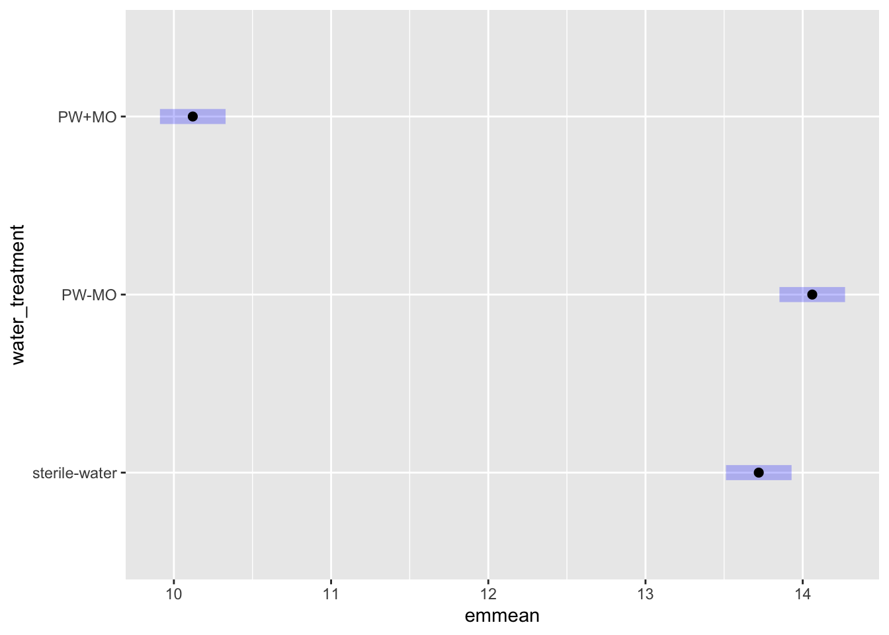
Code
## second order comparisons# day:TBpairwise_day_TB <-emmeans(mod3_glm, pairwise ~ TB | day, adjust ="tukey")
NOTE: Results may be misleading due to involvement in interactions
Code
pairwise_day_TB
$emmeans
day = 1:
TB emmean SE df lower.CL upper.CL
n 12.8 0.17 48 12.5 13.1
y 12.7 0.17 48 12.4 13.1
day = 3:
TB emmean SE df lower.CL upper.CL
n 12.5 0.17 48 12.1 12.8
y 14.6 0.17 48 14.3 15.0
day = 5:
TB emmean SE df lower.CL upper.CL
n 11.9 0.17 48 11.6 12.3
y 13.3 0.17 48 13.0 13.6
day = 7:
TB emmean SE df lower.CL upper.CL
n 11.2 0.17 48 10.8 11.5
y 12.0 0.17 48 11.7 12.4
Results are averaged over the levels of: water_treatment
Confidence level used: 0.95
$contrasts
day = 1:
contrast estimate SE df t.ratio p.value
n - y 0.0678 0.24 48 0.283 0.7787
day = 3:
contrast estimate SE df t.ratio p.value
n - y -2.1476 0.24 48 -8.956 <.0001
day = 5:
contrast estimate SE df t.ratio p.value
n - y -1.3858 0.24 48 -5.779 <.0001
day = 7:
contrast estimate SE df t.ratio p.value
n - y -0.8539 0.24 48 -3.561 0.0008
Results are averaged over the levels of: water_treatment
NOTE: Results may be misleading due to involvement in interactions
Code
pairwise_water_treatment_day
$emmeans
day = 1:
water_treatment emmean SE df lower.CL upper.CL
sterile-water 13.62 0.208 48 13.20 14.03
PW-MO 12.88 0.208 48 12.46 13.30
PW+MO 11.83 0.208 48 11.41 12.25
day = 3:
water_treatment emmean SE df lower.CL upper.CL
sterile-water 15.18 0.208 48 14.76 15.60
PW-MO 15.36 0.208 48 14.94 15.77
PW+MO 10.15 0.208 48 9.74 10.57
day = 5:
water_treatment emmean SE df lower.CL upper.CL
sterile-water 13.48 0.208 48 13.06 13.90
PW-MO 14.48 0.208 48 14.06 14.90
PW+MO 9.85 0.208 48 9.43 10.27
day = 7:
water_treatment emmean SE df lower.CL upper.CL
sterile-water 12.61 0.208 48 12.19 13.03
PW-MO 13.52 0.208 48 13.11 13.94
PW+MO 8.65 0.208 48 8.23 9.07
Results are averaged over the levels of: TB
Confidence level used: 0.95
$contrasts
day = 1:
contrast estimate SE df t.ratio p.value
(sterile-water) - (PW-MO) 0.733 0.294 48 2.495 0.0418
(sterile-water) - (PW+MO) 1.788 0.294 48 6.087 <.0001
(PW-MO) - (PW+MO) 1.055 0.294 48 3.592 0.0022
day = 3:
contrast estimate SE df t.ratio p.value
(sterile-water) - (PW-MO) -0.177 0.294 48 -0.603 0.8191
(sterile-water) - (PW+MO) 5.026 0.294 48 17.115 <.0001
(PW-MO) - (PW+MO) 5.203 0.294 48 17.718 <.0001
day = 5:
contrast estimate SE df t.ratio p.value
(sterile-water) - (PW-MO) -1.002 0.294 48 -3.412 0.0037
(sterile-water) - (PW+MO) 3.627 0.294 48 12.350 <.0001
(PW-MO) - (PW+MO) 4.629 0.294 48 15.763 <.0001
day = 7:
contrast estimate SE df t.ratio p.value
(sterile-water) - (PW-MO) -0.915 0.294 48 -3.115 0.0086
(sterile-water) - (PW+MO) 3.960 0.294 48 13.485 <.0001
(PW-MO) - (PW+MO) 4.875 0.294 48 16.600 <.0001
Results are averaged over the levels of: TB
P value adjustment: tukey method for comparing a family of 3 estimates
Code
plot(pairwise_water_treatment_day)
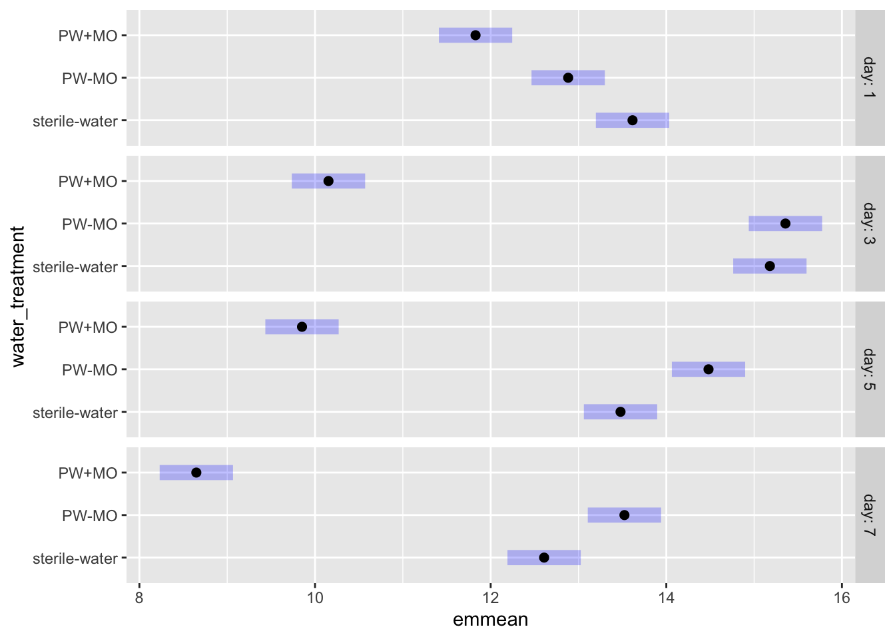
ANOVA No interactions, Bd ~ day + TB + water_treatment
Results
Let’s interpret, this is similar to the GLM for the first order (since no interactions) but the results for day differ slightly
Day shows day 7 is the only difference: Day 1 = Day 3 = Day 5 > Day 7 (note day 5 and day 7 p = 0.0504 so do with that what you will)
TB: With TB = more Bd than no TB (p = 0.0001755)
Water treatment: any treatment with MO has lower Bd, sterile water and microbe free pond water are the same (0.5643192), pond water with microorganisms has less Bd than sterile water (p < 0.001), and pond water with MO has less Bd than pond water without (p < 0.001)
Code
# build model# no interactionsmod_pw_nointeractions <-aov(log_adh_plus_sup ~ day + TB + water_treatment,data = pw_noday0)# diagnostic plotpar(mfrow =c(2,2))plot(mod_pw_nointeractions) # much more normal
Code
# look at resultssummary(mod_pw_nointeractions) # all sig does
Df Sum Sq Mean Sq F value Pr(>F)
day 3 35.40 11.80 8.911 4.99e-05 ***
TB 1 20.99 20.99 15.850 0.000175 ***
water_treatment 2 228.85 114.42 86.404 < 2e-16 ***
Residuals 65 86.08 1.32
---
Signif. codes: 0 '***' 0.001 '**' 0.01 '*' 0.05 '.' 0.1 ' ' 1
(not best for experimental design) Bd ~ day + treatment
Can use this to get the comparisons per treatment, but it doesnt analyze the experimental setup as well as the previous one, commented out here
Code
# # build model# mod <- lm(log_adh_plus_sup ~ day + sample_ID,# data = pw_noday0)# # # diagnostic plot# par(mfrow = c(2,2))# plot(mod)# # # look at results# anova(mod) # day is significant, sample id is too# AIC(mod) # 237.1393# # # comparisons by day# emmeans::emmeans(mod, pairwise ~ day) # pairwise comparisons# # # comparisons by treatment# # emmeans::emmeans(mod, pairwise ~ sample_ID) # pairwise comparisons
3b Aquatic environmental biofilm on Bd growth:
All microbe-depleted, NO microbe+ treatment (from RC’s 3b figure legend)
Renwei’s figure
ggplot version: replicating Renwei’s AE
Code
ae_summary <- ae %>%group_by(day, sample_ID) %>%reframe(mean =mean(adh), # calculate the meann =length(adh), # count the number of observationsdf = n -1, # calculate the degrees of freedomsd =sd(adh), # calculate the standard deviationse = sd/sqrt(n), # calculate the standard error ) %>%# add column for TB or nomutate(TB =case_when(str_detect(sample_ID, "TB") ~"y", TRUE~"n")) %>%# add column for PW or nomutate(PW =case_when(str_detect(sample_ID, "PW") ~"y", TRUE~"n"))ae_summary %>%# reorder to match Renwei's plotmutate(sample_ID =factor(sample_ID,levels =c("1%TB+AEbiofilm", "MQ+AEbiofilm","PW+AEBiofilm", "Added Bd" ))) %>%ggplot(aes(x = day,y = mean,color = sample_ID)) +geom_point(size =2) +geom_errorbar(aes(ymin = mean - se, # plot the standard errorymax = mean + se),width =0.1) +geom_line() +scale_y_log10(limits =c(1e3, 1e7),breaks =c(1e3, 1e4, 1e5, 1e6, 1e7)) +# vibeslabs(x ="Day",y ="Bd Quantity per sample (ZE/well)",title ="Environmental Biofilm",caption ="only adherent Bd visualized here (the only data we have)") +scale_color_manual(values =c("1%TB+AEbiofilm"="orange","MQ+AEbiofilm"="blue","PW+AEBiofilm"="magenta","Added Bd"="darkgrey")) +# Assign specific colors to match RC's plottheme_minimal() +theme(panel.grid.major.x =element_blank(), # Remove major vertical grid linespanel.grid.minor.x =element_blank()) +# Remove minor vertical grid linesscale_x_continuous(breaks =c(0, 1, 3, 5, 7))
Caitlin’s version AE
Code
ae_summary <- ae %>%group_by(day, sample_ID) %>%reframe(mean =mean(adh), # calculate the meann =length(adh), # count the number of observationsdf = n -1, # calculate the degrees of freedomsd =sd(adh), # calculate the standard deviationse = sd/sqrt(n), # calculate the standard error ) %>%# add column for TB or nomutate(TB =case_when(str_detect(sample_ID, "TB") ~"y", TRUE~"n")) %>%# add column for PW or nomutate(PW =case_when(str_detect(sample_ID, "PW") ~"y", TRUE~"n"))ae_summary %>%# reorder to match Renwei's plotmutate(sample_ID =factor(sample_ID,levels =c("1%TB+AEbiofilm", "MQ+AEbiofilm","PW+AEBiofilm", "Added Bd" ))) %>%ggplot(aes(x = day,y = mean,color = sample_ID)) +geom_point(size =2) +geom_errorbar(aes(ymin = mean - se, # plot the standard errorymax = mean + se),width =0.1) +geom_line() +scale_y_log10(limits =c(1e3, 1e7),breaks =c(1e3, 1e4, 1e5, 1e6, 1e7)) +# vibeslabs(x ="Day",y ="Bd Quantity in AE Biofilm (ZE/well)",color ="Medium with\nAE Biofilm")+# Title for color legendscale_color_manual(values =c("1%TB+AEbiofilm"="#4477AA","MQ+AEbiofilm"="#228833",#"Added Bd" = "darkgrey","PW+AEBiofilm"="#AA3377"),labels =c("1%TB+AEbiofilm"="TB Broth","MQ+AEbiofilm"="MQ Water","PW+AEBiofilm"="Filtered\nPond Water","Added Bd"="Initial Bd")) +# Custom labelsmyCustomTheme()+scale_x_continuous(breaks =c(0, 1, 3, 5, 7),labels =c("Initial\nBd", "1", "3", "5", "7"))
Show the underlying data!!
3b EDA
visualize y var: bd load
Code
# untransformedae_noday0 <- ae %>%filter(day !=0) %>%mutate(log_adh =log(adh)) # note: no zeroes so not log + 1ggqqplot(ae_noday0, "adh", title ="untransformed")
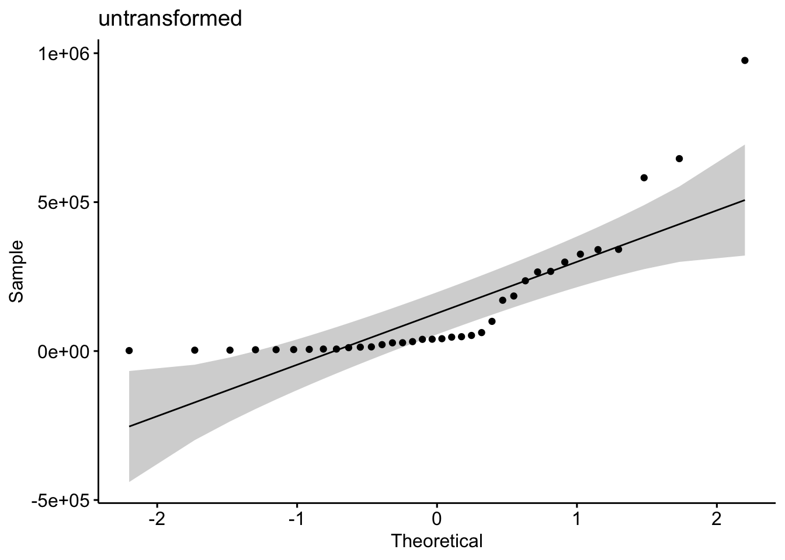
Code
shapiro.test(ae_noday0$adh) # nope
Shapiro-Wilk normality test
data: ae_noday0$adh
W = 0.69154, p-value = 2.089e-07
Code
hist(ae_noday0$adh) # note
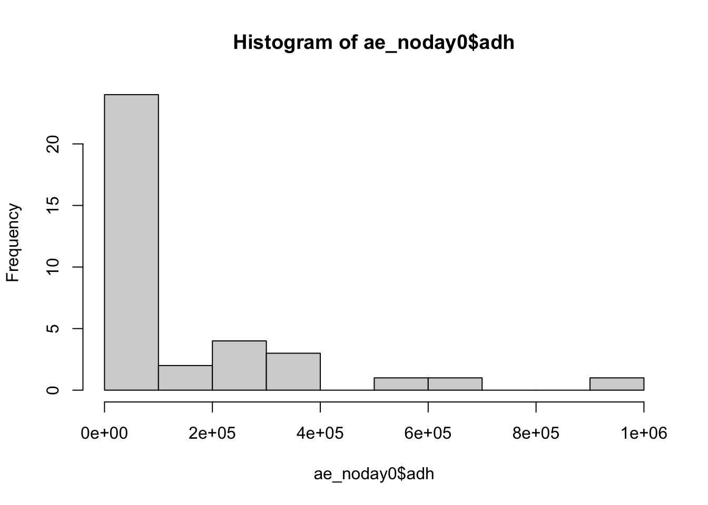
Code
# transformedggqqplot(ae_noday0, "log_adh", title ="log transformed") # gorgeous
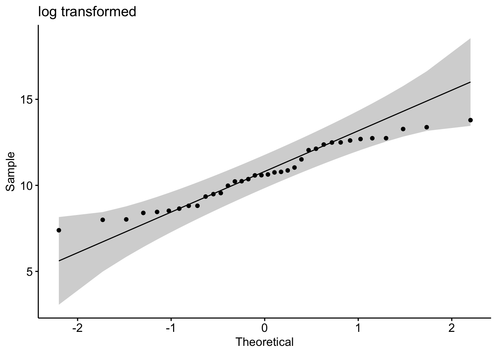
Code
hist(ae_noday0$log_adh) # better
Code
shapiro.test(ae_noday0$log_adh) # p-value = 0.1699 def normal
Shapiro-Wilk normality test
data: ae_noday0$log_adh
W = 0.95671, p-value = 0.1699
3b Stats
Keep interaction, skedasticity isn’t “too bad”, and will show underlying data in plot to be super transparent
y var: amount of Bd in adherent
x vars: day & medium with the AE biofilm and Bd (MQ, TB, PW)
Bd ~ day*medium
Question: Does the amount of Bd in the aquatic environmental biofilm differ across the media tested and across the days, and do they interact with each other?
Model: 2-way ANOVA
Summary of results
Bd qty Day 1 > Day 3 > Day 5 > Day 7 (all p <0.005) in other words, Bd significantly reduced each day
MQ+AEbiofilm > PW+AEBiofilm > 1%TB+AEbiofilm (all p <0.005) In other words, TB plus biofilm has most Bd inhibition power, followed by pond water, then by milliQ with the least inhibition power
Code
# quick check: we want day as a FACTORae_noday0 <- ae_noday0 %>%mutate(day =as.factor(day)) %>%# column for mediummutate(medium = sample_ID)str(ae_noday0$day)
Commented out here, we want the interactions and the homogeneity of var aboveis “good enough”
Better homogeneity of var, but no interaction, AIC is worse
Same first order results except days 5 and 7 no longer differ and PW+AEBiofilm-MQ+AEbiofilm no longer differ
Code
# # build model# mod2 <- aov(log_adh ~ day + medium,# data = ae_noday0)# # # diagnostic plot# par(mfrow = c(2,2))# plot(mod2) # kinda not homoskedastic# # # look at results# summary(mod2)# anova(mod2) # all significant and interaction sig# AIC(mod2) # 71.25093# # TukeyHSD(mod2) # all days sig diff from each other, all media sig diff from each other, second order is a bit messy
4b Monolayer biofilm on Bd growth:
It looks like solid lines are with microbes and dashed lines are without microbes
Renwei’s figure
ggplot version: replicating Renwei’s ML
Code
monolayer_summary <- monolayer %>%group_by(day, sample_ID) %>%reframe(mean =mean(adh_plus_sup), # calculate the meann =length(adh_plus_sup), # count the number of observationsdf = n -1, # calculate the degrees of freedomsd =sd(adh_plus_sup), # calculate the standard deviationse = sd/sqrt(n), # calculate the standard error ) %>%mutate(microbes =case_when(str_detect(sample_ID, "\\+microbes") ~"y",TRUE~"n")) %>%# add column for TB or nomutate(TB =case_when(str_detect(sample_ID, "TB") ~"y", TRUE~"n")) %>%# add column for PW or nomutate(PW =case_when(str_detect(sample_ID, "PW") ~"y", TRUE~"n")) monolayer_summary %>%# reorder to match Renwei's plotmutate(sample_ID =factor(sample_ID, levels =c("TB+PW+microbes","PW+microbes","TB+PW-microbes", "PW-microbes"))) %>%ggplot(aes(x = day, y = mean, color = sample_ID)) +geom_point(size =2) +geom_errorbar(aes(ymin = mean - se, # plot the standard errorymax = mean + se),width =0.1) +geom_line(aes(linetype = microbes)) +scale_y_log10(limits =c(1e4, 1e8), breaks =c(1e4, 1e5, 1e6, 1e7, 1e8)) +# vibeslabs(x ="Day",y ="Bd Quantity per sample (ZE/well)",title ="Monolayer",caption ="supernatant plus adherent visualized here") +scale_color_manual(values =c("TB+PW+microbes"="palegreen4", "PW+microbes"="magenta", "TB+PW-microbes"="chocolate4", "PW-microbes"="purple")) +# Assign specific colors to match RC's plotscale_linetype_manual(values =c("n"="dashed", "y"="solid")) +theme_minimal() +theme(panel.grid.major.x =element_blank(), # Remove major vertical grid linespanel.grid.minor.x =element_blank()) +# Remove minor vertical grid linesscale_x_continuous(breaks =c(0, 1, 3, 5, 7))
Caitlin’s version ML
Code
monolayer_summary <- monolayer %>%group_by(day, sample_ID) %>%reframe(mean =mean(adh_plus_sup), # calculate the meann =length(adh_plus_sup), # count the number of observationsdf = n -1, # calculate the degrees of freedomsd =sd(adh_plus_sup), # calculate the standard deviationse = sd/sqrt(n), # calculate the standard error ) %>%mutate(microbes =case_when(str_detect(sample_ID, "\\+microbes") ~"y",TRUE~"n")) %>%# add column for TB or nomutate(TB =case_when(str_detect(sample_ID, "TB") ~"y", TRUE~"n")) %>%# add column for PW or nomutate(PW =case_when(str_detect(sample_ID, "PW") ~"y", TRUE~"n")) monolayer_summary %>%# reorder to match Renwei's plotmutate(sample_ID =factor(sample_ID, levels =c("TB+PW+microbes","PW+microbes","TB+PW-microbes", "PW-microbes"))) %>%ggplot(aes(x = day, y = mean, color = sample_ID)) +geom_point(size =2) +geom_errorbar(aes(ymin = mean - se, # plot the standard errorymax = mean + se),width =0.1) +geom_line(aes(linetype = microbes)) +scale_y_log10(limits =c(1e4, 1e8), breaks =c(1e4, 1e5, 1e6, 1e7, 1e8)) +# vibeslabs(x ="Day",y ="Bd in mono-Bd biofilm (ZE/well)",color ="Medium", # Title for color legendlinetype ="Microbes Present") +scale_color_manual(values =c("TB+PW+microbes"="#4477AA", "PW+microbes"="#EE6677", "TB+PW-microbes"="#66CCEE", "PW-microbes"="#AA3377"), labels =c("TB+PW+microbes"="TB + PW + MO","PW+microbes"="PW + MO","TB+PW-microbes"="TB + PW - MO","PW-microbes"="PW - MO")) +# Custom labelsmyCustomTheme()+scale_linetype_manual(values =c("n"="dashed", "y"="solid"),labels =c("n"="N", "y"="Y")) +# Change labels to uppercase N and Yscale_x_continuous(breaks =c(0, 1, 3, 5, 7),labels =c("Initial\nBd", "1", "3", "5", "7"))
4b EDA
visualize y var: bd load
Commented out to save space, log transformed is better
Code
# # untransformed# ml_noday0 <- monolayer %>%# filter(day != 0) %>%# mutate(log_adh_plus_sup = log(adh_plus_sup)) # note: no zeroes so not log + 1# ggqqplot(ml_noday0, "adh_plus_sup", title = "untransformed")# shapiro.test(ml_noday0$adh_plus_sup) # nope# hist(ml_noday0$adh_plus_sup) # note# # # transformed# ggqqplot(ml_noday0, "log_adh_plus_sup", title = "log transformed") # gorgeous# hist(ml_noday0$log_adh_plus_sup) # better# shapiro.test(ml_noday0$log_adh_plus_sup) # p-value = 0.01321 not quite normal
4b Stats
y var: amount of Bd
x vars: day, treatment, microbes y/n, pw y/n, tb y/n
Best model: Bd ~ day*microbes*TB
Question: Does the amount of Bd in the sample differ across the treatments of presence of microbes, TB, and day?
Model: 3-way ANOVA
results
Results summary
day (p<0.05)
All differ from each other except 5 and 7 (Tukey)
Day 1 > Day 3 > Day 5 = Day 7
microbes (p<0.05)
presence microbes has less Bd (Tukey)
TB (NOT SIG)
day:microbes (p<0.05)
day:TB (NOT SIG)
microbes:TB (p<0.05)
day:microbes:TB (NOT SIG)
Code
ml_noday0 <- monolayer %>%filter(day !=0) %>%mutate(log_adh_plus_sup =log(adh_plus_sup))# quick check: we want day as a FACTORml_noday0 <- ml_noday0 %>%mutate(day =as.factor(day))str(ml_noday0$day)
# set PW-microbes as reference (no milliQ here)ml_noday0$sample_ID <-factor(ml_noday0$sample_ID)ml_noday0$sample_ID <-relevel(ml_noday0$sample_ID, ref ="PW-microbes")